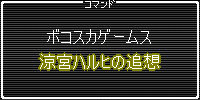

タイトル
涼宮ハルヒの追想
発売日
2011年5月12日
発売元
バンダイナムコゲームス
ハード
PS3/PSP
価格
7,329円/6,279円
掲示板/発売前情報
リンク
├
涼宮ハルヒの追想 掲示板
└
お問い合わせ
■発売前情報
├
ストーリー
├
ゲームシステム
├
登場人物/声優
└
製品情報
├
涼宮ハルヒの追想 公式サイト
├
PS3セーブデータ投稿掲示板
├
PS3トロフィーまとめwiki
├
ゲーム各種完全攻略への道！
└
攻略サイト リンク集
攻略チャート
攻略データ
■フェーズ1
├
A1 一日目
└
A2・A3 一日目・二日目
■フェーズ2
├
B1 一日目・二日目
└
B2 一日目・二日目
■フェーズ3 →
要点まとめ
├
B4 一日目・二日目
├
C1・C2・C3 一日目・二日目
├
D1・D2 一日目
└
E1 一日目・二日目
■フェーズ4 →
要点まとめ
├
F1・F2・F3 一日目・二日目
└
E2・E3 一日目・二日目
■フェーズ5
└
F4 二日目
├
エンドレスファイト
├
着せ替えブロック崩し
├
北高祭の思い出(CG)
├
エンディングのリスト
├
シーンの再生
└
トロフィー
涼宮ハルヒの追想 公式ファンブック
PS3、PSP用ソフト「涼宮ハルヒの追想」唯一の完全攻略ビジュアルブック。アニメ製作委員会監修の「消失」直後から始まるオリジナルストーリと、描きおろしCGイラストも完全掲載。「ハルヒ」ファン必携の1冊。
単行本
出版社：角川書店(角川グループパブリッシング)
ISBN-10：4048546317
ISBN-13：978-4048546317
発売日：2011/5/25
小説
>
ヤングアダルト
>
作品
>
涼宮ハルヒ シリーズ
>
涼宮ハルヒ ゲーム版